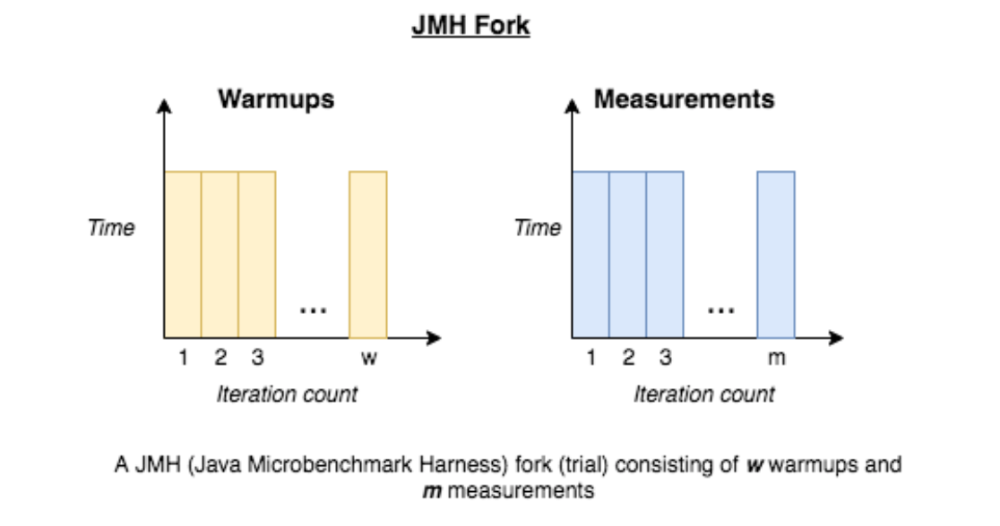

Welcome!
I'm Luis Estevez, a Computer Science student at SUNY Oswego
About:
I started attending SUNY Oswego in 2017, and plan on graduating in 2021.
I was born/raised in Brooklyn, New York which is where I still reside.
I am pursuing a bachelor's degree in Computer Science with a minor in Cognitive Science. I have
experience programming in Java, Python, Scala, Clojure, C, Prolog, Swift, HTML, and CSS. Programming
has been a passion of mine for some time, so I'm always looking for new
challenges/opportunities to encounter!
Here I will be posting some of the work I have worked on
as well as some programs I've completed!
Projects:

Comparing Throughput using Java Microbench Harnessing
(HOHLinkedList vs ConcurrentSkipListMap)
Program that simulates a Campus Schedule System using a custom Hand Over Hand Concurrent Linked List.
With another solution using ConcurrentSkipListMap. Then comparing the two using JMH.
Compares Throughput of two Concurrent data structures.
Click here for more information:
Github Repository
Results

Yelp Recommender
Program with GUI that shows user a list of entities and allows them to select one then returns
a list of similar entities, the most similar entity, the closest entities by KM, and reviews.
Uses K-Means clustering to gather most similar entities to show the user.
Click here for more information:
K-Means
Github Repository
Yelp Database

Knotepad
A special side project of mine that started as a project to learn Swift in my free time!
A simple notes organizer for iPhones and iPads.
Click here for more information:
View On iOS App Store
Knotepad Support Page

CentroBusApp
Final Assignment of the semester for Software Engineering (CSC380)
Allows users to track Centro Bus along the SUNY Oswego Campus
Click here for more information:
Github Repository
Luis Estevez
email: luisestvz67@gmail.com